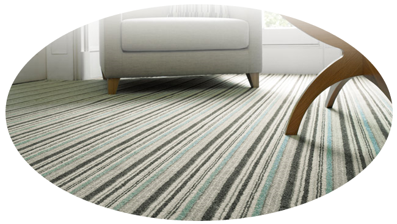

Волокна натурального происхождения в свою очередь делятся на растительные и животные материалы.
Среди натуральных растительных материалов чаще всего употребляются такие, как лен, хлопок, джут, сизаль и
кокосовые волокна. Материалы животного происхожения — это шерсть и шелк.


Звукопоглощающие свойства. Ковровые покрытия обладают идеальными звукопоглащающими свой-
ствами. Разница между уровнем шума от шагов по деревянному полу и по ковровому покрытию составляет
23 дБпри 1000 Гц.


Ковровые покрытия (ковролины) из полимерных материалов
Ковролины.
Для украшения интерьера все чаще используют современные текстильные напольные покрытия. Кроме эстетической стороны они дают пользователю массу преимуществ чисто практического свойства, например, повышают тепло- и звукоизоляцию. Любые ковровые покрытия — натуральные или синтетические — при правильной укладке и соответствующем уходе придают помещению неоценимый комфорт.Ковровые покрытия известны человечеству с незапамятных времен. Изготовленные вручную, кропотливым трудом, занимавшим зачастую долгие годы, они всегда считались неотъемлемым атрибутом роскоши и комфорта в жилище.
В XX веке появился целый ряд новых технологий, таких, как вязка, рашель, связывание ворсового материала технология сбивания войлочных ковров. С появлением новых технологий и переходом от ручного к промышленному производству ковры перестают быть атрибутом жилищ только богатых людей и получают широкое распространение.
Разумеется, для каждой области применения существуют специальные виды ковровых покрытий, предназначение которых определяется, как правило, типом основы и материалом ворса.
Ковровые покрытия в разрезе. Структура современных ковровых покрытий практически всегда одна и та же. Если взглянуть на ковровое покрытие в разрезе от его поверхности до основания, то можно выделить следующие составляющие: ворс, первичная подкладка (основа) и вторичная подкладка, состоящая из закрепляю- щего слоя и собственно подкладки, как правило, из вспененной резины (латекса). Ковровый ворс обычно делается из пряжи или волокон натурального или искусственного происхождения.
Синтетические и искусственные материалы. Сегодня, благодаря своим качествам, среди которых приемлемая стоимость, долговечность и особые технические свойства, все большую часть рынка завоевывают синтетические и искусственные материалы. В качестве волокнистого материала для ковровых покрытий наиболее часто используют полиамид (нейлон), полиакрил, полипропилен (олефин) и полиэстер. В Западной Европе производители ковровых покрытий и потребители отдают явное предпочтение полиамиду, в США популярностью пользуется олефин.
Полиамид, полиакрил, полиэстер — названия всех этих материалов имеют приставку «поли». Это означает, что все эти материалы состоят из гигантских молекул, в которые скреплены группы меньших молекул. В так называемом процессе полимеризации мономеры связываются между собой, образуя полимеры, которые представляют собой длинные молекулярные цепи. Подробнее рассмотреть этот процесс мы можем на примере производства полиамида. Ковролины выпускаются и промышленностью России.
Синтетические ковровые покрытия применяют для устройства чистых полов в зданиях повышенного класса (студиях, санаторно-курортных и детских учреждениях, гостиницах). В отличие от обычных тканых ковров синтетические ковровые покрытия являются основным покрытием пола и заменяют линолеум, паркет и т. п. Ковровые покрытия чаще всего не приклеивают к основанию, а сваривают или склеивают отдельные полотнища в ковер размером «на комнату». По периметру комнаты края ковра закрывают плинтусом, а свободные кромки в дверных проемах обрамляют пластмассовыми или металлическими порожками. В некоторых проектах предусматривается приклейка кромок ковра или отдельных его участков мастиками КН — 2 или КН — 3.
Промышленность выпускает следующие типы синтетических ковровых покрытий: • синтетический ворсовый материал на вспененной ла- тексной основе; • ворсолин БП (ТУ 21-29-10-72) и ворсолин П (ТУ 400-1-51-55-70).
Синтетический ворсовый материал для полов состоит из двух и более слоев. Верхний слой — ворсовое полиамидное или капроновое покрытие, нижний — вспененный латекс. Некоторые заводы изготовляют ковровый материал, который состоит из трех слоев: верхнего — ворсового капронового покрытия, среднего — хлопчатобумажной ткани и нижнего — вспененного латекса.
Ворсолин БП представляет собой покрытие из безпетлевой ворсовой пряжи из синтетических волокон, закрепленных поливинилхлоридным полимером. Выпускают ворсолин БП в рулонах, скатанных ворсовой стороной внутрь на деревянный или картонный сердечник. Длина полотнища должна быть не менее 12 м, ширина 1500±30 мм и толщина 3±0,5 мм.
Температура воздуха в помещении, где выполняют распаковку рулонов ворсолина БП, должна быть не ниже 15° С. Если рулоны в процессе транспортирования подвергались действию более низкой температуры, то перед распаковкой их нужно выдержать 1—2 дня при температуре 15° С. Хранят рулоны в вертикальном положении в утепленном помещении и оберегают от загрязнения.
Ворсолин П — двухслойное ворсовое покрытие. Верхнее покрытие — из петельного ворса высотой 4±1 мм, нижнее — основа из поливинилхлоридного полимера толщиной не менее 1 мм. Его изготовляют одно- и многоцветным и поставляют в рулонах длиной не менее 6 м, скатанных ворсовой стороной внутрь. Правила хранения и работы с ним такие же, как и для ворсолина БП. В зависимости от материала изготовления они бывают — капроновые, полиамидные, шерстяные и т. д.; от технологии — тканые, ворсово-прошивные (тафтинговые), клеевые (нетканые) и иглопробивные (войлочные).
Ворсовое рулонное покрытие на основе синтетических волокон (ТУ 21—29.55—77) изготавливают пу- тем нанесения синтетического ворса, длиной не менее 3 мм, в электростатическом поле на различные виды подоснов. Выпускают его в рулонах: длина не менее 1200 мм, ширина 1100—1600 мм, толщина — не менее 5 мм. Масса 1м2 — 4,3 кг.
Деколин — линолеум поливинилхлоридный декоративный на теплозвукоизолирующей подоснове (ТУ 21—29—103—84), изготавливается путем нанесения среднего поливинилхлоридного слоя на поливинилхлоридную пленку с печатным рисунком и последующим дублированием с теплозвукоизолирующей подосновой и терможелированием среднего слоя контактным способом.
Нижний слой линолеума представляет собой нетканый иглопробивной материал.
Ворсолин (ТУ 21 —29— 12—77) — рулонное покрытие для полов на основе синтетических волокон, петлевое. Пряжа состоит из синтетических волокон или из смеси волокон синтетических и химических. Нижний слой — поливинилхлоридная подоснова. Выпускается рулонами длиной 6000 мм, шириной 700 мм и толщиной 5 мм (толщина подосновы 0,5 мм), масса 1м2 — 4,3 кг.
Ворсолит (ГОСТ 26149—84) — рулонное покрытие на основе химических волокон, изготовляется иглопробивным способом из смеси химических волокон с добавлением отходов химических и натуральных волокон и последующей пропиткой полимерным связующим. Покрытие, предназначается для жилых помещений и зданий, где нет интенсивного движения. Размеры покрытия: длина 12000 — 20000 мм, ширина 1300— 1700 мм, толщина 5 мм. Масса рулона не более 50 кг.
Ковроплен (ТУ 400—1—184—79) — ковровое поливинилхлоридное покрытие на синтетической подосно- ве с печатным рисунком получают методом дублирования двухслойной нетканой основы с печатным рисунком и прозрачной поливинилхлоридной пленки. Применяют покрытие в гостиницах, библиотеках, театрах, в холлах и т. д. Выпускают ковроплен в рулонах: длина не менее 15000 мм, ширина 1200 и 1500 мм, толщина 4,5 мм.
Благодаря своей способности к звукопоглощению и звукоизоляции, применение ковровых покрытий может компенсировать установку акустических потолков. Ковровые покрытия существенно снижают шумы от перемещения стульев, звонящих телефонов, работающих принтеров в офисных помещениях. Еще одно важное качество — снижение звукоотражения, что позволяет рекомендовать ковровые покрытия для помещений, где проводятся пресс-конференции.
Области применения ковровых покрытий. В наши дни выбор ковровых покрытий огромен. В каждом конкретном случае перед дизайнером стоит непростая задача: подобрать наиболее приемлемое покрытие с учетом не только его эстетических качеств, но и технических свойств, а также экономических факторов.
Область применения коврового покрытия определяется с учетом всех параметров, о которых мы говорили выше.
От типа пряжи (волокнистая или кудельная) и конструкции коврового покрытия зависят такие качества, как тепло- и звукоизоляция. Метод окраски также учитывается при выборе области применения. Особое внимание при определении сферы применения уделяется устойчивости к истиранию, огнестойкости и ударопрочности.
Махровые ковровые покрытия и ковровые покрытия типа «саксони» рекомендуются к использованию только в спальнях, так как они более других типов подвержены загрязнению, менее износоустойчивы, следы от ножек мебели на них довольно заметны. Велюровые («плюшевые») и «фризе» ковровые покрытия более уместны в гостиных и детских комнатах — они легко очищаются, обладают сравнительно высокой износоустойчивостью. Для общественных помещений, офисов, коридоров, лестниц, вестибюлей, а так же прихожих и кухонь в квартирах лучше всего подходят петлевые комбинированные типы. Благодаря невысокому плотному ворсу петлевые ковровые покрытия хорошо чистятся, грязь и пыль почти не проникают внутрь ворса, следов от ножек мебели на них не остается, срок службы петлевого покрытия намного дольше.
Свойства помещения должны учитываться при подборе цвета и фактуры (конструкции поверхности). В помещениях, где бывает большое количество людей, на полу скапливается значительное количество грязи, поэтому ковровые покрытия пастельных тонов в данных ситуациях быстро потеряют опрятный внешний вид. Следует учесть, что многоуровневое покрытие (high-low structure), примененное в помещениях с повышенной проходимостью, чистить будет значительно сложнее. Более подходящими для данного типа помещений будут гладко-петлевые ковровые покрытия приглушенных цветов, смешанных расцветок или букле.
Для помещений с повышенной влажностью, таких как: ванная комната, кухня, санузел, лучше ис- пользовать ковровые покрытия из синтетических материалов. Это относится не только к материалу, из которого сделан ворс, но и к материалу основы.
Ковролин
КОВРОВЫЕ ПОКРЫТИЯ (КОВРОЛИНЫ) ИЗ ПОЛИМЕРНЫХ МАТЕРИАЛОВ.
View moreМы в социальных сетях


Tender Leone © 2017